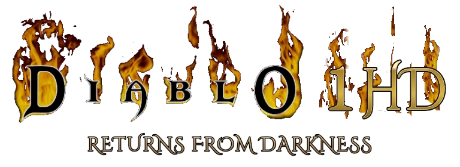
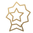
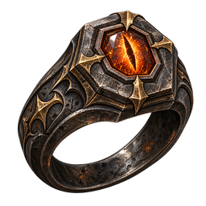
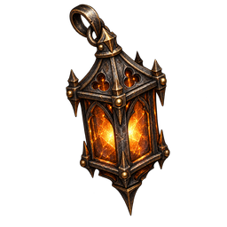
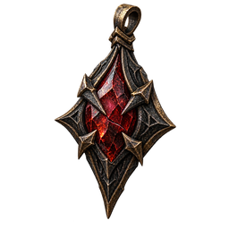

READY TO PLAY
A escuridão
nos reúne.
Reencontre Tristram. Reúna seu grupo.
Uma nova jornada começa no mesmo lugar.

READY TO PLAY
Reencontre Tristram. Reúna seu grupo.
Uma nova jornada começa no mesmo lugar.
O Santuário recria a experiência social da Battle.net clássica de Diablo: entre com sua conta, converse em canais, encontre jogadores e crie ou participe de salas multiplayer. É o ponto de encontro da comunidade Returns from Darkness para reunir o grupo e continuar a jornada no jogo.
Conecte sua conta para ver as salas e reunir seu grupo.
O SEU PORTAL PARA TRISTRAM
Returns from Darkness HD · Cliente da comunidade
READY TO PLAY
Windows · v0.4.2
Baixe o cliente e escolha sua sala. As versões são atualizadas automaticamente ao iniciar uma nova partida.

RELÍQUIAS DE RETURNS FROM DARKNESS
Três relíquias próprias para a campanha Normal em Horror. Encontre-as ao derrotar estes chefes; a elegibilidade segue as regras de itens do seu personagem.

Uma vigília mantida quando todas as outras luzes se apagaram.

Sua última brasa recorda o caminho de volta a Tristram.

Das cinzas, um juramento de retornar juntos.
CAPTURAS REAIS DO CLIENTE
Conheça a interface em jogo, as relíquias da Primeira Vigília e os menus que aproximam o Santuário da sua partida. Abra as imagens para ver cada detalhe.

A moldura de pedra e metal do projeto acompanha o mundo clássico. Vida e mana têm líquido animado e estátuas tradicionais; o cinto mantém os espaços para poções.

Signet of the Last Vigil, Lantern of the Return e Ashen Covenant: três itens com arte própria. Esta captura mostra a coleção no inventário durante um teste controlado.

O acesso online começa no menu do jogo, com a identidade do projeto e as fontes da interface. A conta do Santuário acompanha a abertura pelo site.

Entre na partida, atualize as opções, saia da sala ou abra a comunidade. O hub usa menus nativos do cliente e a mesma conta da central.

A página Jogar mostra a sala escolhida e o grupo. Abrir jogo nesta sala leva essa escolha ao cliente, sem precisar digitar o endereço de outro jogador.
Entre no Santuário e crie ou escolha uma sala. A conta e a sala seguem com você até o cliente.
O launcher confere a versão antes da partida e encaminha a sala para o cliente da sua conta.
Escolha o personagem e entre na partida. Pelo hub nativo, volte às salas ou abra a comunidade no navegador.
Capturas reais de desenvolvimento. As relíquias foram reunidas em um teste; não representam uma queda natural simultânea. A renovação da interface convive com artes clássicas e adaptações de bases comunitárias. O mundo inteiro ainda não teve suas artes substituídas.
Encontre companheiros na central e atravesse os portões em partidas cooperativas para até quatro jogadores.

Seis arquétipos e 29 classes e especializações. Combine atributos, talentos e características para desenvolver seu estilo de combate.
Cliente em testes
Mais de 2.500 bases de equipamentos, afixos, raridades, gemas e melhorias. Organize seu acervo no baú ampliado e experimente novas combinações.
Cliente em testesA central usa serviços na nuvem; a partida roda nos clientes e exige que o criador permaneça conectado. Personagens são salvos neste computador, com gravação automática e cópia de recuperação. Uma nova sala cria um novo mundo. Artes HD completas, migração de anfitrião e ranking PvP ainda não estão concluídos.
Encontrar a comunidade ↗